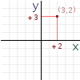
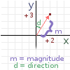
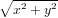
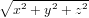
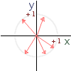

There are many approaches to understanding the type of 3D math used in video games, modelling, ray-tracing, etc. The usual is through vector algebra, matrices, and linear transformations and, while they are not completely necesary to understand most of the aspects of 3D game programming (from the theorical point of view), they provide a common language to communicate with other programmers or engineers.
This tutorial will focus on explaining all the basic concepts needed for a programmer to understand how to develop 3D games without getting too deep into algebra. Instead of a math-oriented language, code examples will be given instead when possible. The reason for this is that. while programmers may have different backgrounds or experience (be it scientific, engineering or self taught), code is the most familiar language and the lowest common denominator for understanding.
When writing 2D games, interfaces and other applications, the typical convention is to define coordinates as an x,y pair, x representing the horizontal offset and y the vertical one. In most cases, the unit for both is pixels. This makes sense given the screen is just a rectangle in two dimensions.
An x,y pair can be used for two purposes. It can be an absolute position (screen cordinate in the previous case), or a relative direction, if we trace an arrow from the origin (0,0 coordinates) to it’s position.
|  |  | |
| Position | Direction | |
When used as a direction, this pair is called a vector, and two properties can be observed: The first is the magnitude or length , and the second is the direction. In two dimensions, direction can be an angle. The magnitude or length can be computed by simply using Pithagoras theorem:
|  |  |
| 2D | 3D |
The direction can be an arbitrary angle from either the x or y axis, and could be computed by using trigonometry, or just using the usual atan2 function present in most math libraries. However, when dealing with 3D, the direction can’t be described as an angle. To separate magnitude and direction, 3D uses the concept of normal vectors.
Vectors are implemented in Godot Engine as a class named Vector3 for 3D, and as both Vector2, Point2 or Size2 in 2D (they are all aliases). They are used for any purpose where a pair of 2D or 3D values (described as x,y or x,y,z) is needed. This is somewhat a standard in most libraries or engines. In the script API, they can be instanced like this:
Vectors also support the common operators +, -, / and * for addition, substraction, multiplication and division.
Vectors also can perform a wide variety of built-in functions, their most common usages will be explored next.
Two points ago, it was mentioned that 3D vectors can’t describe their direction as an agle (as 2D vectors can). Because of this, normal vectors become important for separating a vector between direction and magnitude.
A normal vector is a vector with a magnitude of 1. This means, no matter where the vector is pointing to, it’s length is always 1.
|  |
| Normal vectors aroud the origin. |
Normal vectors have endless uses in 3D graphics programming, so it’s recommended to get familiar with them as much as possible.
Normalization is the process through which normal vectors are obtained from regular vectors. In other words, normalization is used to reduce the magnitude of any vector to 1. (except of course, unless the vector is (0,0,0) ).
To normalize a vector, it must be divided by its magnitude (which should be greater than zero):
Vector3 contains two built in functions for normalization:
The dot product is, pheraps, the most useful operation that can be applied to 3D vectors. In the surface, it’s multiple usages are not very obvious, but in depth it can provide very useful information between two vectors (be it direction or just points in space).
The dot product takes two vectors (a and b in the example) and returns a scalar (single real number):
axbx + ayby + azbz
The same expressed in code:
The dot product presents several useful properties:
The cross product also takes two vectors a and b, but returns another vector c that is orthogonal to the two previous ones.
cx = axbz - azby
cy = azbx - axbz
cz = axby - aybx
The same in code:
The cross product also presents several useful properties:
A plane can be considered as an infinite, flat surface that splits space in two halves, usually one named positive and one named negative. In regular mathematics, a plane formula is described as:
ax + by + cz + d
However, in 3D programming, this form alone is often of little use. For planes to become useful, they must be in normalized form.
A normalized plane consists of a normal vector n and a distance d. To normalize a plane, a vector n and distance d’ are created this way:
nx = a
ny = b
nz = c
d′ = d
Finally, both n and d’ are both divided by the magnitude of n.
In any case, normalizing planes is not often needed (this was mostly for explanation purposes), and normalized planes are useful because they can be created and used easily.
A normalized plane could be visualized as a plane pointing towards normal n, offseted by d in the direction of n.
In other words, take n, multiply it by scalar d and the resulting point will be part of the plane. This may need some thinking, so an example with a 2D normal vector (z is 0, so plane is orthogonal to it) is provided:
Some operations can be done with normalized planes:
Godot Engine implements normalized planes by using the Plane class.
It is very often needed to store the location/rotation of something. In 2D, it is often enough to store an x,y location and maybe an angle as the rotation, as that should be enough to represent any posible position.
In 3D this becomes a little more difficult, as there is nothing as simple as an angle to store a 3-axis rotation.
The first think that may come to mind is to use 3 angles, one for x, one for y and one for z. However this suffers from the problem that it becomes very cumbersome to use, as the individual rotations in each axis need to be performed one after another (they can’t be performed at the same time), leading to a problem called “gimbal lock”. Also, it becomes impossible to accumulate rotations (add a rotation to an existing one).
To solve this, there are two known diferent approaches that aid in solving rotation, Quaternions and Oriented Coordinate Systems.
Oriented Coordinate Systems (OCS) are a way of representing a coordinate system inside the cartesian coordinate system. They are mainly composed of 3 Vectors, one for each axis. The first vector is the x axis, the second the y axis, and the third is the z axis. The OCS vectors can be rotated around freely as long as they are kept the same length (as changing the length of an axis changes its cale), and as long as they remain orthogonal to eachother (as in, the same as the default cartesian system, with y pointing up, x pointing left and z pointing front, but all rotated together).
Oriented Coordinate Systems are represented in 3D programming as a 3x3 matrix, where each row (or column, depending on the implementation) contains one of the axis vectors. Transforming a Vector by a rotated OCS Matrix results in the rotation being applied to the resulting vector. OCS Matrices can also be multiplied to accumulate their transformations.
Godot Engine implements OCS Matrices in the Matrix3 class:
However, in most usage cases, one wants to store a translation together with the rotation. For this, an origin vector must be added to the OCS, thus transforming it into a 3x4 (or 4x3, depending on preference) matrix. Godot engine implements this functionality in the Transform class:
Transform contains internally a Matrix3 “basis” and a Vector3 “origin” (which can be modified individually).
Internally, the xform() process is quite simple, to apply a 3x3 transform to a vector, the transposed axis vectors are used (as using the regular axis vectors will result on an inverse of the desired transform):
So, it is often desired apply sucessive operations to a transformation. For example, let’s a assume that there is a turtle sitting at the origin (the turtle is a logo reference, for those familiar with it). The y axis is up, and the the turtle’s nose is pointing towards the z axis.
The turtle (like many other animals, or vehicles!) can only walk towards the direction it’s looking at. So, moving the turtle around a little should be something like this:
As can be seen, every new action the turtle takes is based on the previous one it took. Had the order of actions been different and the turtle would have never reached the lettuce.
Transforms are just that, a mean of “accumulating” rotation, translation, scale, etc.
Performing several actions over a transform will slowly and gradually lead to precision loss (objects that draw according to a transform may get jittery, bigger, smaller, skewed, etc). This happens due to the nature of floating point numbers. if transforms/matrices are created from other kind of values (like a position and some angular rotation) this is not needed, but if has been accumulating transformations and was never recreated, it can be normalized by calling the .orthonormalize() built-in function. This function has little cost and calling it every now and then will avoid the effects from precision loss to become visible.